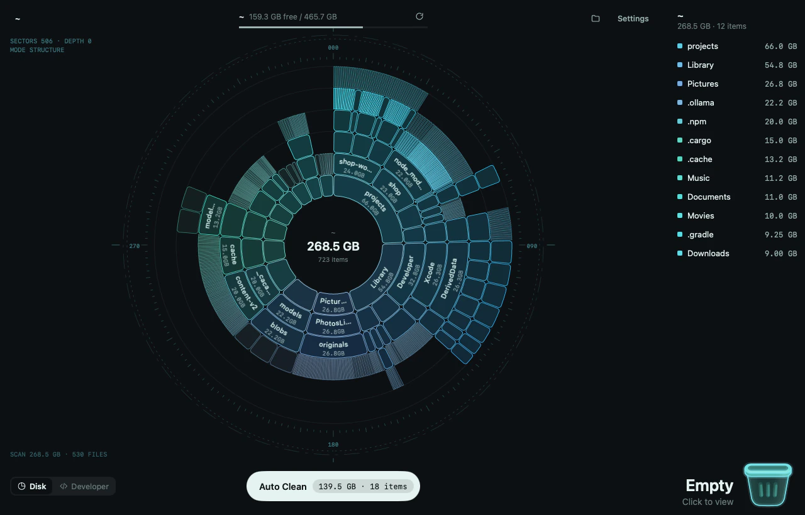
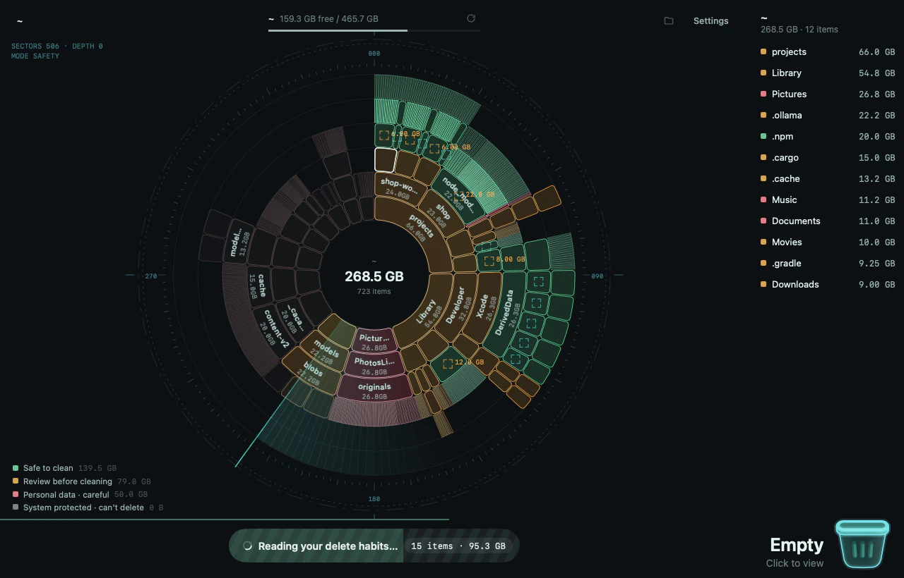
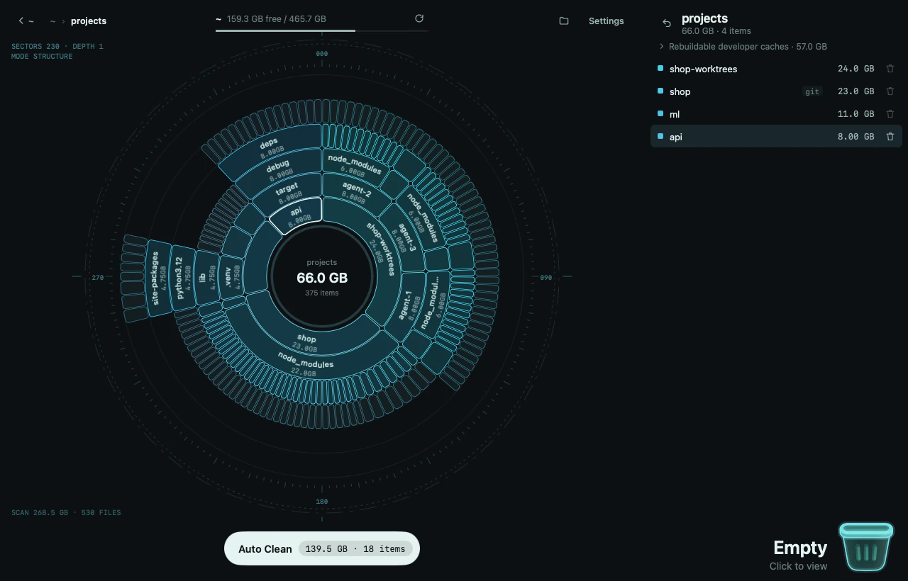
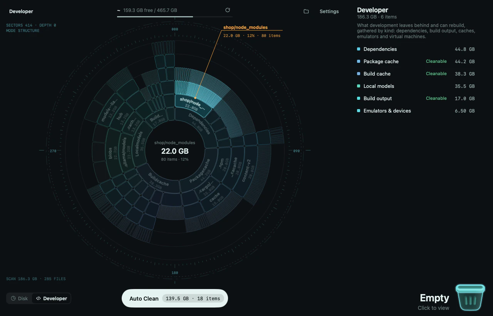
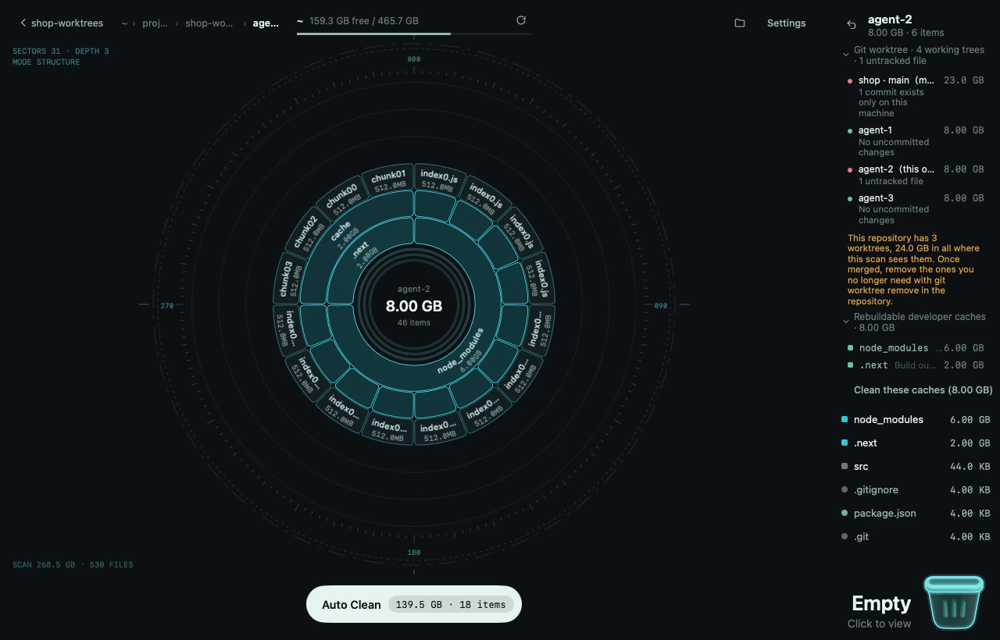
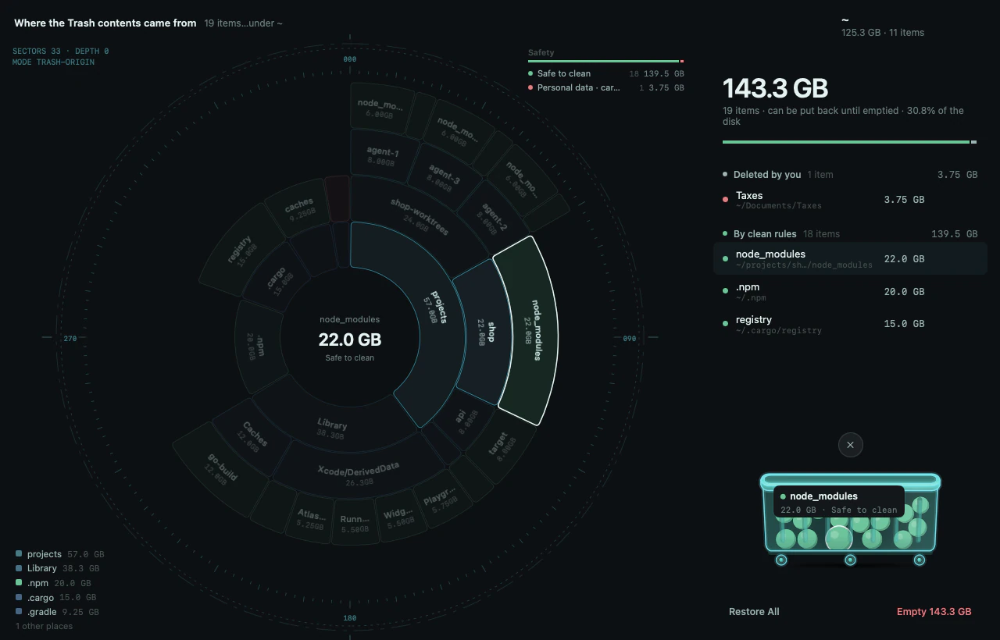

Auto Clean
Sweeps the whole scan with the rules and your habits, shows what it finds as it goes, then throws the plan into the trash. It only takes what is regenerated on demand, or what matches something you deleted by hand before.
Disk cleanup analyser · macOS · Linux
Tossy draws your disk as a sunburst you can drill into, gives every item a safety verdict, and cleans the safe ones in one click. Anything it removes can be put back until you empty its trash.
macOS 12 or later, Apple silicon and Intel · Linux x86-64 and ARM64 · desktop app and command-line tool

Style 01/10 · HUD Holographic cockpit: glass sectors, glowing outlines and instrument rings.
Ten styles. Pick one: the app’s Dock icon follows it, and so does this page.
Safety
About 90 built-in rules sort what is on your disk into four levels. An item without a rule of its own inherits its parent’s verdict.
Generic names such as dist, build or target only count inside a real project, one with a package.json, Cargo.toml or go.mod. Your home folders are personal whatever they hold.
Rebuilt or re-downloaded on demand.
node_modules__pycache__DerivedDatatarget~/.npm~/.cargogo-buildapp caches
Probably fine, but you should confirm.
Docker and VM disksiOS simulatorslocal modelsvirtualenvsDownloads
Your own data. Tossy asks before it touches any of it.
DocumentsDesktopPhotosMail.ssh.git
The OS needs it. Tossy never deletes it.
/System/usrC:\Windows

Structure
Each ring is one level of folders, each sector as wide as what it holds. Click a sector to drill in; the centre, the breadcrumbs or Backspace take you back up.

Developer view
One switch (⌘D) turns the same scan into a developer’s view: only what development leaves behind, wherever it sits on the disk, grouped by kind instead of by folder.
DependenciesBuild outputBuild cachePackage cacheEmulators & devicesContainers & VMsLocal modelsApp cache
Auto Clean takes only developer content here, and still only what is safe. Emulators, VM disks, models and virtualenvs are listed, but left for you to delete one by one.

Git
Uncommitted changes, untracked files, commits that exist only on this machine: Tossy tells you what a repository or worktree would lose before it goes.

Cleaning
Sweeps the whole scan with the rules and your habits, shows what it finds as it goes, then throws the plan into the trash. It only takes what is regenerated on demand, or what matches something you deleted by hand before.
Anything written in the last few minutes, and the caches of apps that are running, are skipped. A clean never pulls a cache out from under a running program.
Delete the same kind of thing by hand often enough and Auto Clean takes it next time, and says why. Restore something a habit picked and it counts double against the habit.
Trash
Putting something in Tossy’s trash only records a mark in a journal. The file stays where it is, and the system trash is never touched. Restoring drops the mark; emptying deletes exactly the marked paths, for good.

Command line
The desktop app and tossy share one Go engine: the same scanner, the same rules, the same trash and the same habits. What you remove in one can be restored from the other.
# the largest entries under a folder
$ tossy scan ~
# what is safe to clean (read-only)
$ tossy eval ~
# developer content, by kind (read-only)
$ tossy dev ~/projects
# a dry run; -yes moves the safe items to the trash
$ tossy clean ~
$ tossy clean -yes ~
# changed your mind
$ tossy trash list
$ tossy trash restore 3Download
macOS 12 or later · Apple silicon and Intel
Open tossy-<version>.dmg and drag Tossy into Applications. The app is signed with a Developer ID and notarized by Apple, so it opens like any other.
x86-64 and ARM64 · needs GTK 3
sudo apt install ./tossy_<version>_amd64.debsudo dnf install ./tossy-<version>-1.x86_64.rpmsh install.sh tossy-<version>-linux-amd64.tar.gzThe command-line tool and SHA256SUMS are attached to every release. The interface speaks English, 简体中文, 繁體中文 and 日本語.